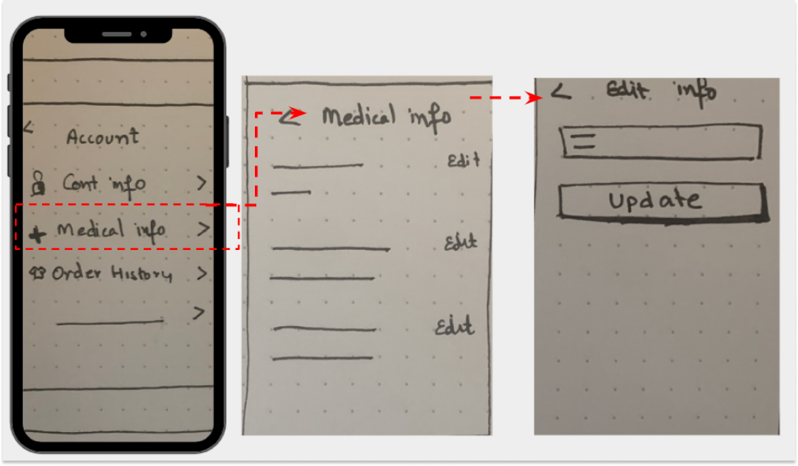

Hypothesis:
I believe Tesla can make its users feel safer by utilising their existing technology to save lives in the event of a road accident.
Role
UX/UI Designer
Duration
UX/UI Designer
Tools
UX/UI Designer
DISCOVER
ABOUT TESLA
Tesla is the second biggest producer of electric vehicles and claims that their technology can help improve the safety of cars.

DISCOVER
TESLA MOBILE APP & TOUCHSCREEN
How does the Tesla app connect to the vehicle?
The Tesla app allows the users to connect their smartphones directly to their in-car dashboard touch screen, known as the Media Control Unit (MCU). Features like radio, air conditioning, and controls to adjust the mirrors are all controlled from the MCU.

DISCOVER
LIFE SAVING OPPORTUNITY
According to the WHO, “Approximately 1.3 million people die each year as a result of road traffic crashes.”
Hypothesis
I believe Tesla can make its users feel safer by utilising its existing
technology to save lives in the event of a road accident.
With this statement in mind, I began my journey by interviewing paramedics.
DISCOVER
INTERVIEWS - PARAMEDICS
“Passengers’ medical information is crucial during ‘the golden hour’ (first 60 minutes after the injury)”
“Information is a form of support. Due to a lack of information, we often feel uncertain about how to treat”
Participants: 3 Paramedics
Sample Questions:
- How do paramedics respond to a car accident?
- In the event of a road accident, how do you obtain the unconscious driver’s details (name, medical, etc.)?
- What medical information or records would you advise people to keep in their car?
DISCOVER
INTERVIEWS - TESLA USERS
After knowing the importance of accessing a driver’s medical information in a road accident, I decided to interview 5 Tesla users to understand how they carry their emergency medical information.

DISCOVER
COMPETITIVE ANALYSIS - CAR MANUFACTURERS
Car safety technology is evolving, so I wanted to analyse car safety features and how they are making commutes safer and less stressful. For analysis, I researched car manufacturers such as Audi, Genesis, Mercedes, Hyundai, Toyota, and Volvo.
The following are some of the advanced safety features that are becoming standard.
- Automatic Emergency Braking Systems (AEBS)
- Lane Keeping Assistance
- Drowsiness Detection System
- Pedestrian Automatic Emergency Braking
- Traffic Sign Recognition
Some car manufacturers are using inventive and cutting-edge technology to gain a competitive advantage.
A Built-in Booster Seat: These booster seats are engineered to position children correctly to ensure that the seat belt works effectively.
SOS Button: With a touch of the SOS button located in the car, a dedicated call center can provide emergency support.
DISCOVER
COMPETITIVE ANALYSIS - EMERGENCY APPS
Based on my competitive analysis of car manufacturers, I decided to analyse apps offering assistance in the case of an emergency. I focused on MyID, Emergency Plus and VicEmergency and what services they offer.

DEFINE
ARCHETYPE - ANXIOUS PARENT
DEFINE
HOW MIGHT I

- assist Tesla users in saving their medical information to their existing Tesla profile?
- improve Tesla’s media control unit (MCU) UI/UX to enhance Tesla’s status as the safest car.
- make it clearer for emergency personnel (who may not be Tesla users) how to check the drivers’ medical information
DEFINE
FEATURE PRIORITISATION
When the airbag is operated due to a road accident:
- a notification along with the location is sent to 000 automatically,
- a notification along with the location and accident video is sent to the nominated emergency contact person automatically, and
- the medical information and accident video appear on the car screen.

DEFINE
USER JOURNEY

IDEATE
DESIGN STRATEGY
Before the design process, I studied existing Tesla app workflows and content. My design strategies are informed by three primary questions:
- How do I design for everyone (Tesla and non-Tesla users like paramedics)?
- What scenarios need to be considered?
- How to design an icon for a new feature that is simple and intuitive so it is easily understood.
DESIGN
SKETCHES
I used paper wireframes as a way to brainstorm different ideas concerning user pain points that I had found during my user research. I started to capture my ideas by sketching and redesigning the current user flow.
IDEATE
CURRENT USER FLOW
User flow to access driver profile details on the app.

IDEATE
NEW USER FLOW
To view the medical information on the vehicle screen, users must have enabled the mobile app access to their Tesla vehicle.
Steps to view, add or update medical information from App:

DESIGN
ICON DESIGN
My biggest challenge was to keep the brand visual in mind and have a generic sign that is intuitively understood by everyone.
The red cross symbol on the car is identified as a generic sign of medical aid, a universal logo for health and help.

DEFINE
NEW FEATURE EXPLAINED - MEDICAL INFO
Tesla’s new feature, “Medical info”, enables the driver to access their medical information instantly when on the road.
In the event of an accident, it allows paramedics to access the unconscious driver’s emergency medical information, which includes blood group, allergies, vaccination records, medical condition, organ donor, and a whole lot more.
Users can eliminate the need to physically carry their emergency medical information when they are on the road and feel safer in case of an accident.

DESIGN
VEHICLE SCREEN DESIGN
Using the Tesla design style guide, the vehicle’s touch screen was designed.
This allows a consistent look across all design elements and maintains previous usability testing research.
To avoid distraction, most of the icons were removed from the emergency screen.


Only essential information required in an accident is displayed. The design focuses on the driver’s emergency medical information, which will automatically be displayed on the screen when the airbags deploy.

How does this work?

VALIDATE
USABILITY TESTING
Length: 15-20 minutes
No. of Participants: 5
Participants: Non-Tesla users
Note: Design and user flow was developed to be intuitive for all (Tesla and non-Tesla) users.
Sample Scenarios:
You are walking your dog in the evening and see a Tesla car in an accident. You rush to help the unconscious driver.
- Looking at the screen are you able to know how to assist the driver?
- Were you able to locate the driver’s Emergency contact person’s details?
- Looking at the screen, can you tell if the emergency services have been informed?
VALIDATE
ITERATION APP
Testing Result of App: Users were confused as to why Tesla was collecting their Medical details and requested more information.
Solution: A new page was created explaining the purpose of the information and how it will be treated.

VALIDATE
ITERATION VEHICLE SCREEN
Testing Result of Vehicle Screen: Users who were not familiar with Tesla vehicles, were not sure how to use the vehicle screen.
Solution: Affordances such as touch screen icon and text was added to the screen to make it intuitive.

DESIGN
VEHCILE SCREEN WIREFRAMES

DESIGN
VEHCILE SCREEN WIREFRAMES

Below screens will be displayed when airbags are deployed.

Pulsing cross will prompt the paramedics where to look touch on the screen for medical information.
FUTURE
IMPROVEMENTS AND CHALLENGES
- I would like to integrate Tesla Driver profile with their insurance provider so that the accident details are pre-populated for a claim to be submitted.
- Ability to display multiple passengers medical information on the car screen in case of a road accident.
- Tesla, like their self-driving feature, will need to consider the privacy laws in local jurisdiction when implementing the proposed Medical information feature.
Overall, Tesla users and paramedics expressed enthusiasm about the possibility of storing and assessing drivers’ emergency medical information. Tesla has a huge opportunity to make their users feel safer, which can help them to uphold their claim of being the safest car in the world.